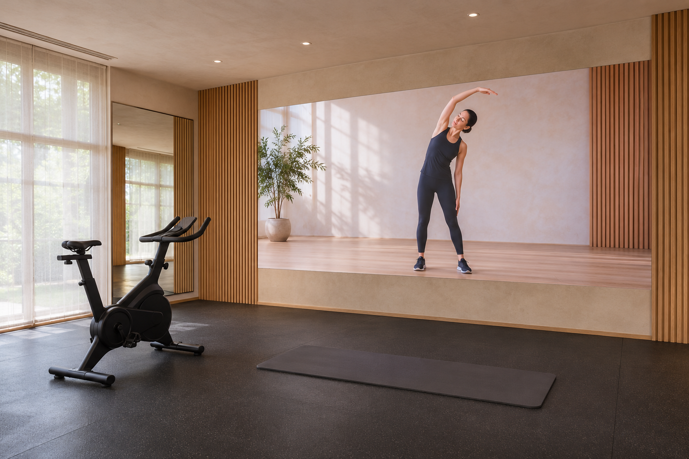
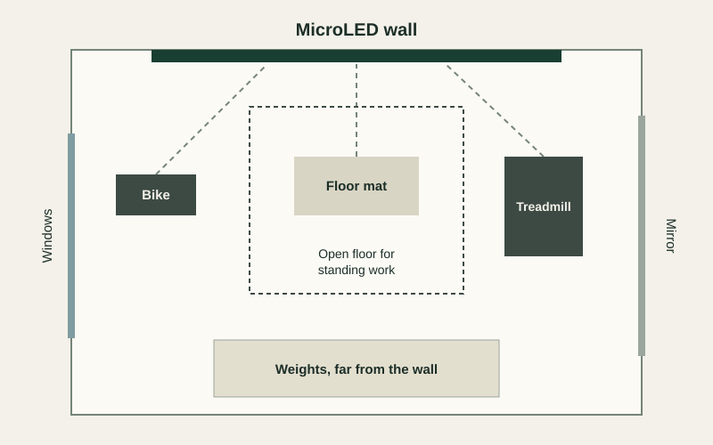

A home gym video wall works best when it is planned around the places you actually train. You might look across the room from a bike, straight ahead while standing and up from a floor mat, all in one session. A large MicroLED wall suits that room because the picture can be big enough to follow an instructor from every position. The wall is a display, so your workout app runs on a separate device connected to it. Plan the positions first, then confirm that your app works through that device before the room is finished.
Plan the wall around each workout position
A cinema is planned around one seated eye height. A gym has several, and each one changes what the wall needs to do.
| Position | Where your eyes are | What to plan |
|---|---|---|
| Bike | Seated and leaning forward | A clear view of the whole picture from the saddle |
| Treadmill | Standing on a raised deck | A picture height that works from above floor level |
| Standing work | Full height and moving around | A wide picture that stays in view as you move |
| Floor work | Close to the floor, often looking up or to the side | A low bottom edge, so the mat has a clear view |
Size the picture for a full-body view
Workouts often show the instructor from head to toe, so the height of the picture matters as much as the width. A 150-inch wall is about 131 inches wide and 74 inches tall, which can show a standing instructor close to life size. That makes movements easy to read from across the room.
The closest spot you use sets the pixel pitch, and in a gym that is often the mat. Our guide to viewing distance and sightlines shows how to work out size and distance for a room.
Lay out the room so every position has a clear view

Keep the open floor directly in front of the wall and set the cardio machines to the sides, angled in. Nobody then stands between a rider and the picture. Equipment makers publish the clearances their machines need, and your designer works from those.
A MicroLED wall is rigid, so it should be kept well away from anything that swings, drops or gets thrown. Free weights, ropes and similar training belong at the far end of the room.
Place mirrors and windows with the wall in mind
A mirror on a side wall lets you check your form with a turn of the head. A mirror directly opposite the wall reflects the picture back across the room, and it sits behind you during most workouts.
Gyms are often bright rooms, and daytime training means windows are part of the plan. Our BlackFire anti-glare surface absorbs room light to cut reflections, and sheer shades help during the brightest hours of the day.
Confirm your workout app before the room is finished
A MicroLED wall shows what a source device sends it. It has no built-in apps or touch screen, and it does not connect to your bike or treadmill. Each workout platform sets its own rules for devices and accounts. Apple’s device list for Fitness+ shows how specific those rules can be, including which accessories put your metrics on screen.
Your dealer runs your actual app on the actual source device and checks the picture, sound and any on-screen metrics at the wall. Our guide to the video processing chain explains how that signal reaches the display.
Make the instructor easy to hear and the controls easy to reach
Rubber floors, glass and mirrors make a gym a hard-sounding room, and instructor cues have to come through over music and machines. Speakers near the wall keep the voice with the picture, and your dealer can tune the system for clear speech.
Controls should be simple enough to use mid-session. A single workout scene can set the lights, the sound and the source together, with volume close at hand. Our guide to control scenes shows how a room moves between uses.
What your dealer decides for a home gym
- The size and height of the picture, checked from each workout position
- Where the wall sits in relation to equipment, weights and open floor
- Pixel pitch, based on the closest spot you use
- The source device, tested with your actual workout app
- Speaker positions and tuning for clear speech
- A conditioned room with enough cooling for the wall and for people exercising in it
Plan your home gym wall with an authorized dealer
Bring your room plan, your equipment list and the workout apps you use to an authorized Opal dealer. They can show you a MicroLED wall at full size and work through how each position will look from where you train.
Find a Dealer for Your Home Gym